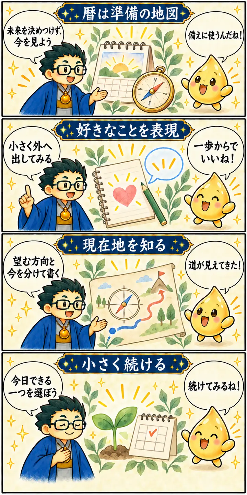

第3期 Zoom講座・第3回
2026年の大転換期を読み解く
この回の要約
暦は未来を決めつけるものではなく、今の自分を見直す手がかり。望む方向へ向けて、小さく表現し続ける。
講義では干支の暦の「八専」、現状と目標を書き分けるコンパスシート、毎日の習慣、好きなことを表現する練習をつなげて話しました。AIや学習サイトも理解と制作を支える道具として紹介されます。社会変化に関する予測は講師の見方であり、確定した事実ではありません。
4コマ漫画でつかむ

タイムスタンプ
時間を押すと、上の動画がその場面から再生されます。
質疑応答
※ 書き起こしをもとに学習用に再構成しています。吹き出しは逐語引用ではありません。個人が特定される鑑定内容は掲載していません。
暦は何のために読む？
09:31から見る ▶暦を見れば、これから起きることが決まるのでしょうか？
講義では干支の暦を、時期の特徴を考える手がかりとして使います。大事なのは、読んだあとに自分がどう動くかです。
持ち帰り：暦の解釈と、確認できる出来事を分けて考える。
「八専」は強さをどう扱うかという話
12:42から見る ▶八専の話を聞くと、何か悪いことが起きるのかと不安になります。
ここでは六十干支の終盤を説明するために取り上げました。怖がるよりも、自分の思い込みや行動を見直す入口にしましょう。
暦と個人・社会の出来事を結びつける部分は講師の解釈です。体調や社会情勢の原因を暦で断定するものではありません。
持ち帰り：「何が起きるか」より「自分にできる備えは何か」を書く。
コンパスシートで現在地と目標を分ける
53:46から見る ▶変わりたいのに、何から始めればいいか分かりません。
コンパスシートで、望む方向と今の位置を別々に整理します。そこから今日できる小さなことを一つ決めましょう。
持ち帰り：「今は」「これからは」「今日だけは」の三行を書いてみる。
習慣は、無理なく続けられる大きさに
54:34から見る ▶目標が大きすぎて、続けられる自信がありません。
講義では、毎日ほんの少し掃除する例を出しました。自分で選んだ小さな行動を、できた日に記録するところから始めます。
講義中の「脳のプログラミングを書き換える」は比喩として扱います。習慣の効果を医学的に保証する表現ではありません。
持ち帰り：一分でできる行動を選び、できた日を記録する。
好きなことを、小さな場所で表現する
1:26:15から見る ▶発信は目立つので、いきなり大勢の前では緊張します。
まずはこの小さな学びの場で、好きなことを言葉にする練習を。少しずつ自分に合う表現へ広げていきましょう。
持ち帰り：一文の感想、身近な人との会話、短い投稿などから選ぶ。
覚えておきたいこと
- 暦は講師の解釈の枠組み。未来や健康状態を確定するものではない。
- 八専の話は恐怖ではなく、考え方や行動を点検するきっかけにする。
- コンパスシートでは現在地と望む方向を分けて書く。
- 続ける行動は、今日できるほど小さくする。
- 表現は自分のペースで練習する。収益や評価は保証されない。
復習ポイント
講義内の占術上の説明・時代の読み・象徴的な解釈は、講師の見立てです。客観的な事実や将来を保証するものではありません。